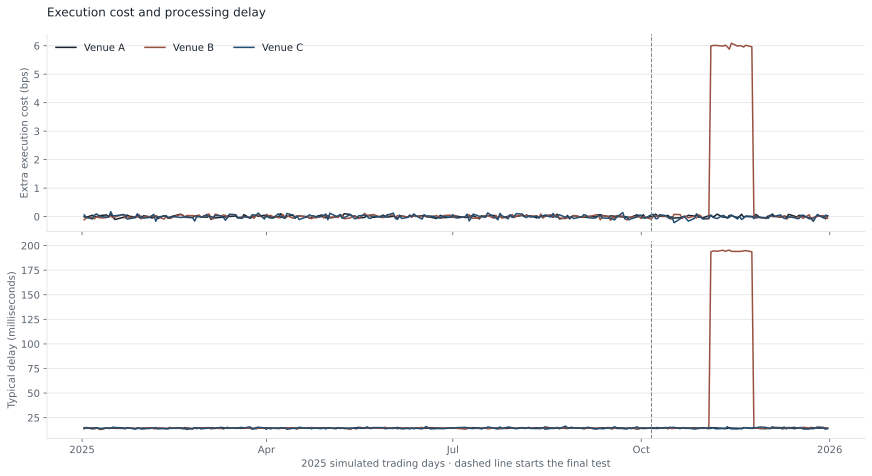

Execution costs and trading results
Can a change in trading results be traced to execution costs or to the trading signal? This study follows simulated orders from the initial decision to the final profit or loss.
The checks identified the two deliberately introduced problems separately.
Read the study →